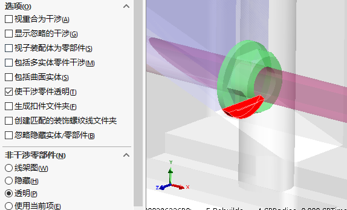

技巧-干涉检查
SOLIDWORKS软件针对干涉检查提供了全方位的功能，无论是在装配体还是零部件在静态、动态的环境下都可以快速的进行干涉检查且立即以警示窗口提示将面临的干涉部位，进而快速修正或排除此干涉现象。
静态干涉检查
SOLIDWORKS的【干涉检查】，可检查设计是否存在干涉，并做出修正，减少干涉问题带来的浪费。也可针对大型组合件、多本体零件以及指定零组件来进行检查。利用SOLIDWORKS干涉检查可得知产生干涉的零组件、每个干涉部位的体积，并以高亮颜色显示。
在装配体环境下，点击【评估】-【干涉检查】-【计算】

你还可以在”选项”和”显示”里，操作计算的零件及进行干涉位置的显示。
碰撞干涉检查
大型组合件中可常见许多的运动机构设计，较复杂的运动机构设计是很难于判别出干涉的。以往是将零组件装配作动后，才会得知是否产生干涉的现象。SOLIDWORKS移动零部件可用有效检查运动状态下的零部件干涉情况。
- 在装配体环境下，点击【装配体】-【移动零部件】
- 在选项中点击【碰撞检查】,启用’碰撞时停止’、’高亮显示面’、’声音’
- 拖动运动的机构检查过程中的碰撞情况。
- （可选）检查范围可选择【所有零部件之间】或【这些零部件之间】

运动干涉检查
除了手动操作机构运动外，SW还提供的动画干涉检查的功能，通过设置实际工况下的运动步骤，有程序自身去检查该过程中会存在的干涉情况（并列出干涉对象和位置）。
在装配体环境下，点击【动画】并设置好机构动画。在【动画】设计树中，右键总装配体选择“检查干涉”

选择要检测的零部件，点击立即查找。检查结果会列出在对话框的下边，并提示找到几个干涉（以及每个捕捉帧的干涉情况）